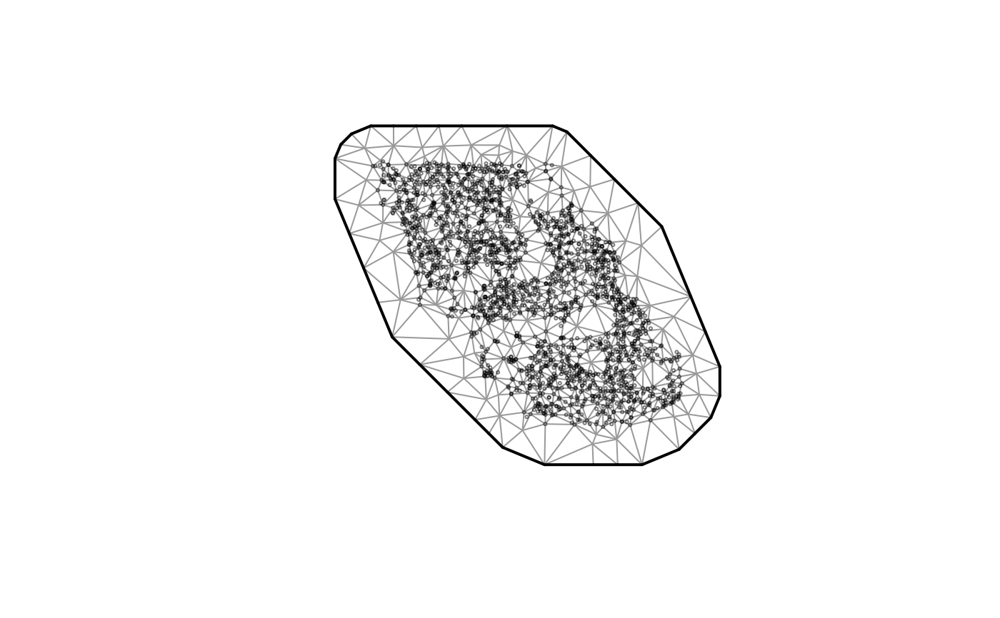
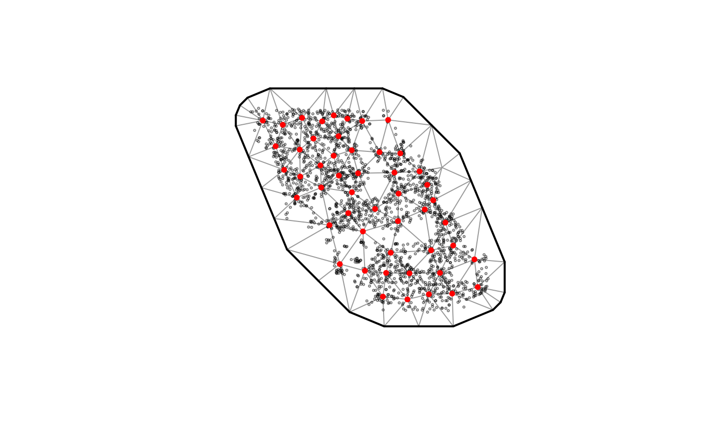
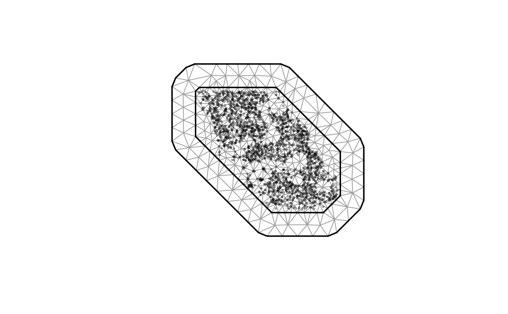
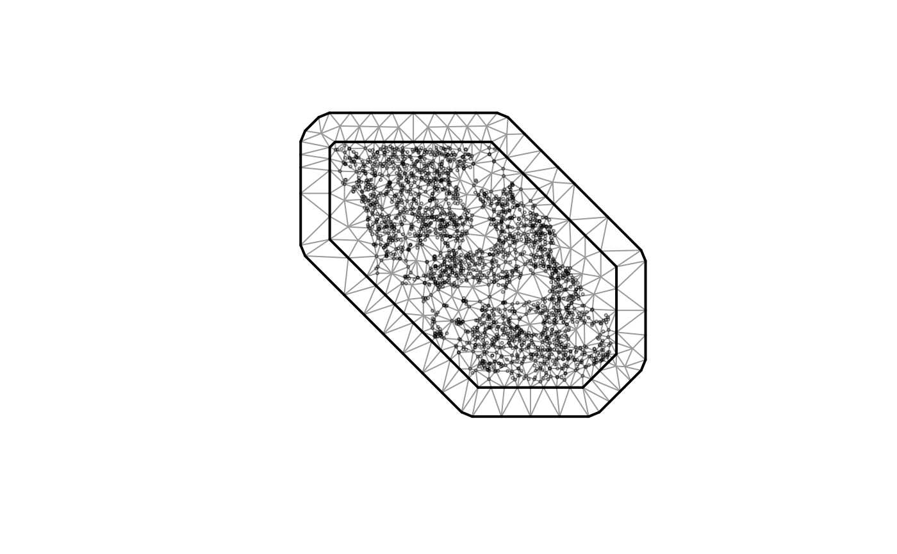

Construct an SPDE mesh for use with sdmTMB.
Usage
make_mesh(
data,
xy_cols,
type = c("kmeans", "cutoff", "cutoff_search"),
cutoff,
n_knots,
seed = 42,
mesh = NULL,
fmesher_func = fmesher::fm_rcdt_2d_inla,
convex = NULL,
concave = convex,
...
)
# S3 method for sdmTMBmesh
plot(x, ...)Arguments
- data
A data frame.
- xy_cols
A character vector of x and y column names contained in
data. These should likely be in an equal distance projection. For a helper function to convert to UTMs, seeadd_utm_columns().- type
Method to create the mesh. Also see
meshargument to supply your own mesh.- cutoff
An optional cutoff if type is
"cutoff". The minimum allowed triangle edge length.- n_knots
The number of desired knots if
typeis not"cutoff".- seed
Random seed. Affects
stats::kmeans()determination of knot locations iftype = "kmeans".- mesh
An optional mesh created via fmesher instead of using the above convenience options.
- fmesher_func
Which fmesher function to use. Options include
fmesher::fm_rcdt_2d_inla()andfmesher::fm_mesh_2d_inla()along with version without the_inlaon the end.- convex
If specified, passed to
fmesher::fm_nonconvex_hull(). Distance to extend non-convex hull from data.- concave
If specified, passed to
fmesher::fm_nonconvex_hull(). "Minimum allowed reentrant curvature". Defaults toconvex.- ...
Passed to
graphics::plot().- x
Output from
make_mesh().
Value
make_mesh(): A list of class sdmTMBmesh. The element mesh is the output
from fmesher_func (default is fmesher::fm_mesh_2d_inla()). See
mesh$mesh$n for the number of vertices.
plot.sdmTMBmesh(): A plot of the mesh and data points. If
ggplot2 is installed, a ggplot2 object is
returned, otherwise a base graphics R plot is returned. To make your own,
pass your_mesh$mesh to inlabru::gg().
Examples
# Extremely simple cutoff:
mesh <- make_mesh(pcod, c("X", "Y"), cutoff = 5, type = "cutoff")
plot(mesh)

# Using a k-means algorithm to assign vertices:
mesh <- make_mesh(pcod, c("X", "Y"), n_knots = 50, type = "kmeans")
plot(mesh)

# \donttest{
# But, it's better to develop more tailored meshes:
# Pass arguments via '...' to fmesher::fm_mesh_2d_inla():
mesh <- make_mesh(
pcod, c("X", "Y"),
fmesher_func = fmesher::fm_mesh_2d_inla,
cutoff = 8, # minimum triangle edge length
max.edge = c(20, 40), # inner and outer max triangle lengths
offset = c(5, 40) # inner and outer border widths
)
plot(mesh)

# Or define a mesh directly with fmesher (formerly in INLA):
inla_mesh <- fmesher::fm_mesh_2d_inla(
loc = cbind(pcod$X, pcod$Y), # coordinates
max.edge = c(25, 50), # max triangle edge length; inner and outer meshes
offset = c(5, 25), # inner and outer border widths
cutoff = 5 # minimum triangle edge length
)
mesh <- make_mesh(pcod, c("X", "Y"), mesh = inla_mesh)
plot(mesh)

# }